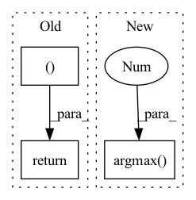

Pattern ID :952

Before Change
// [n, m, h, w, k]
posterior = OneHotCategoricalStraightThrough(logits=logit.reshape(n, self._m, self._k, h, w).permute(0, 1, 3, 4, 2))
// [n, m, h, w, k]
quantized = posterior.rsample(())
// [n, m, h, w]
code = quantized.argmax(-1)
// [n, m * k, h, w]
return quantized.permute(0, 1, 4, 2, 3).reshape(n, -1, h, w), code, logit
class _multiCodebookDeQuantization(nn.Module):
After Change
n, _, h, w = x.shape
sample, logit = self._sample(x)
// [n, m, h, w]
code = sample.argmax(-1)
// [n, m, h, w, k]
return sample, code, logit
In pattern: SUPERPATTERN
Frequency: 3
Non-data size: 3
Instances
Fragment ID: 3478583
Project Name: xiaosu-zhu/mcquic
Commit Name: c8472b7771fcce1ada6c08536b30f4bd47138bff
Time: 2021-12-27
Author: xiaosu.zhu@outlook.com
File Name: src/mcqc/models/quantizer.py
M Class Name: _multiCodebookQuantization
N Class Name: _multiCodebookQuantization
M Method Name: forward(2)
N Method Name: forward(2)
M Parent Class: nn.Module
N Parent Class: nn.Module
M File Name: src/mcqc/models/quantizer.py
N File Name: src/mcqc/models/quantizer.py
M Start Line: 56
M End Line: 65
N Start Line: 84
N End Line: 88
'>
Before Change
// soft = hard
// [n, c, h, w], [n, h, w], [n, h, w, k], [n, c, h, w], [k, c]
return hard, trueCode, logit
class AttentiveQuantizer(nn.Module):
def __init__(self, k: int, cin: int, cout: int, dropout: bool = True, deterministic: bool = False, additionWeight: bool = True, ema: float = 0.8):
After Change
logit = self.getLogit(q, k)
trueCode = logit.argmax(-1)
sample = F.gumbel_softmax(logit, temperature, True)
code = sample.argmax(-1)
target = self._codebook
hard = sample @ target
hard = hard.permute(0, 3, 1, 2)
'>
Fragment ID: 3478582
Project Name: xiaosu-zhu/mcquic
Commit Name: 7a148c81efefedeb8e926140f617b48395d1ca79
Time: 2021-10-08
Author: xiaosu.zhu@outlook.com
File Name: src/mcqc/models/quantizer.py
M Class Name: L2Quantizer
N Class Name: L2Quantizer
M Method Name: forward(3)
N Method Name: forward(3)
M Parent Class: nn.Module
N Parent Class: nn.Module
M File Name: src/mcqc/models/quantizer.py
N File Name: src/mcqc/models/quantizer.py
M Start Line: 250
M End Line: 265
N Start Line: 250
N End Line: 266
'>
Before Change
quantizeds.append(deTransformed)
codes.append(sample.argmax(-1).permute(1, 0).reshape(n, h, w))
logits.append(logit.reshape(n, h, w, k))
return quantizeds, codes, logits
class VQuantizer(nn.Module):
def __init__(self, k: List[int], cin: int, rate: float = 0.1):
After Change
logit = x @ codewords
soft = (logit / temperature).softmax(-1)
if hard:
hard = logit.argmax(-1)
hard = F.one_hot(hard, k)
sample = (hard - soft).detach() + soft
else:
sample = soft
'>
Fragment ID: 3478584
Project Name: xiaosu-zhu/mcquic
Commit Name: 96e69f8763c2cf2c9cf0695159db17ddf4e0c857
Time: 2021-02-15
Author: xiaosu.zhu@outlook.com
File Name: src/mcqc/models/quantizer.py
M Class Name: TransformerQuantizer
N Class Name: TransformerQuantizer
M Method Name: forward(4)
N Method Name: forward(4)
M Parent Class: nn.Module
N Parent Class: nn.Module
M File Name: src/mcqc/models/quantizer.py
N File Name: src/mcqc/models/quantizer.py
M Start Line: 280
M End Line: 335
N Start Line: 280
N End Line: 339